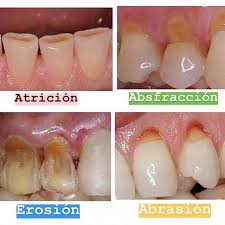
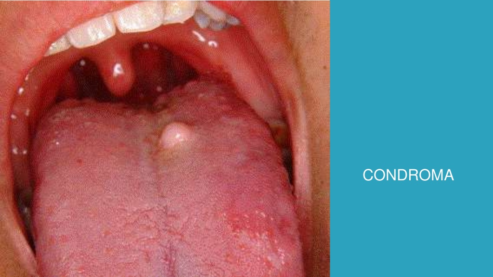
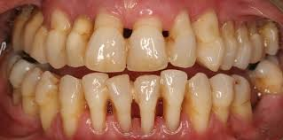
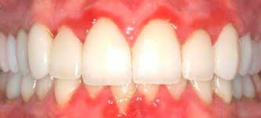
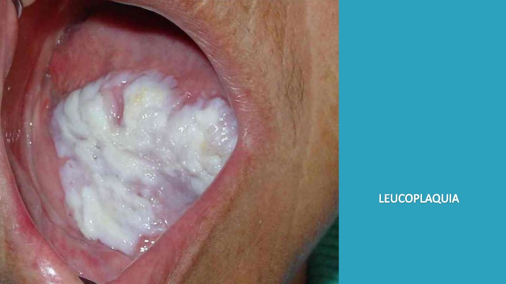
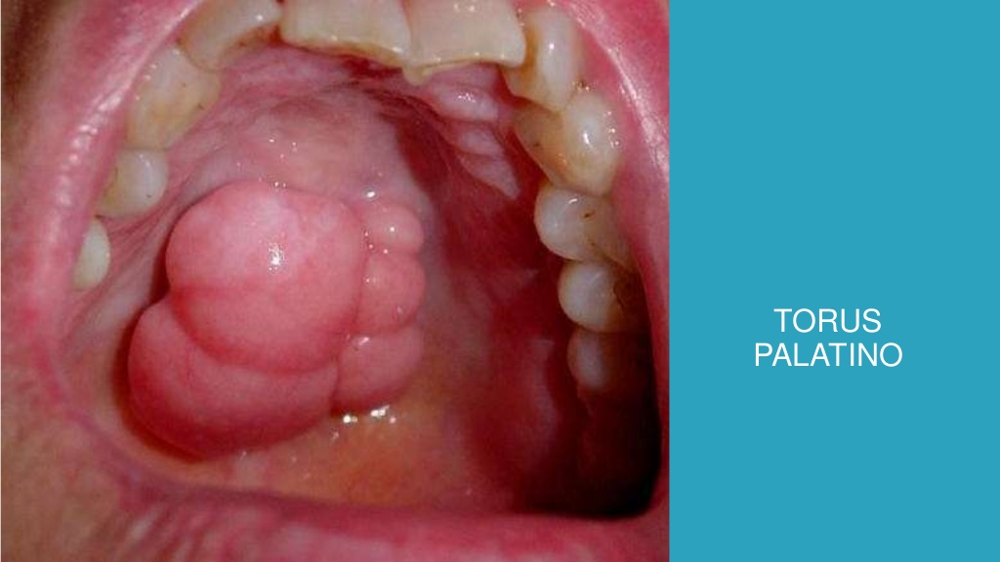
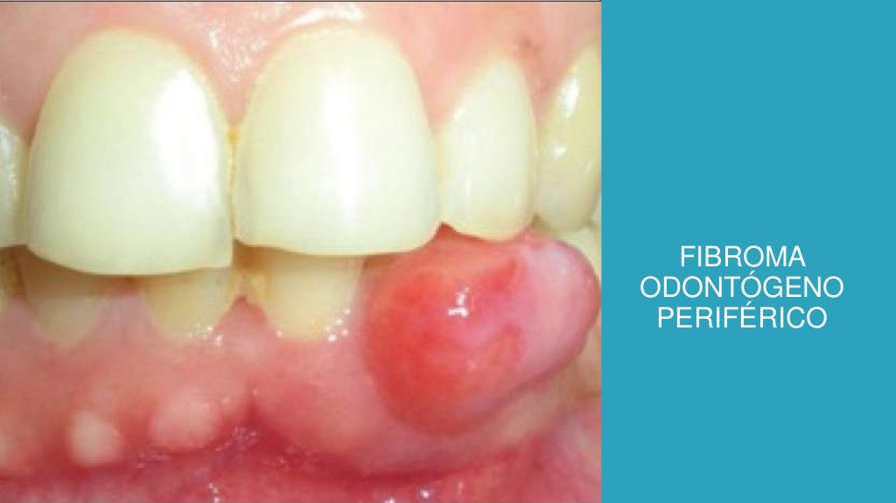

Además de las lesiones cariosas nuestros dientes están sujetos a otra gran amenaza que no debe subestimarse si queremos gozar de unos dientes sanos: el desgaste dental. El desgaste dental supone la pérdida irreversible de tejidos duros en la superficie externa del diente y engloba diferentes lesiones que pueden acabar arruinando nuestra dentadura. Habitualmente se atribuía esta pérdida a la abrasión y erosión causadas por el cepillado, pero actualmente se tienen en cuenta otros factores como las fuerzas oclusales.

El cáncer de encia es uno de los tantos tipos de cáncer que corresponden a la categoría llamada �cánceres de cabeza y cuellos. El cáncer de boca y los otros tipos de cáncer de cabeza y cuello se suelen tratar de manera similar.
El cáncer de lengua es uno de los tantos tipos de cáncer que corresponden a la categoría llamada �cánceres de cabeza y cuellos. El cáncer de boca y los otros tipos de cáncer de cabeza y cuello se suelen tratar de manera similar.

La caries dental es la destrucción de los tejidos de los dientes causada por la presencia de ácidos producidos por las bacterias de la placa depositada en las superficies dentales. Este deterioro de los dientes está muy influenciado por el estilo de vida, es decir influye lo que comemos, la forma cómo cuidamos nuestros dientes (nuestros hábitos de higiene), la presencia de flúor en la sal y la pasta de dientes que utilizamos. La herencia también juega un papel importante en la susceptibilidad de sus dientes a las caries.

Los tumores cartilaginosos del área buco maxilofacial son raros. Pero cuando se presentan es necesario diferenciarlos de otras lesiones de más frecuente presentación y del verdadero condrosarcoma. Se presenta un caso de un condroma que involucraba la región premaxilar junto el diagnóstico diferencial clínico patológico.

Se entiende por enfermedad periodontal la afectación patológica de las encías, existiendo fundamentalmente dos tipos: la gingivitis y la periodontitis. La primera es un proceso inflamatorio de las encías y la segunda un agravamiento de este proceso que puede dañar los tejidos blandos y los huesos que sostienen los dientes hasta el punto de provocar su caída.

La gingivitis se debe a los efectos a corto plazo de los depósitos de placa en los dientes. La placa es un material pegajoso compuesto de bacterias, moco y residuos de alimentos que se acumula en las partes expuestas de los dientes. También es una causa importante de caries dental.

Con la leucoplasia, se forman parches blancos y espesos en las encías, en la parte interna de los pómulos, en la parte inferior de la boca y, a veces, en la lengua. Se pueden eliminar los parches raspándolos.
Los médicos no saben qué causa la leucoplasia, pero consideran que la irritación crónica por tabaco, ya sea fumado, humedecido o masticado, es la causa principal de su desarrollo.

Un osteoma es un tumor benigno, constituido por tejido óseo maduro y bien diferenciado, de lento crecimiento, que puede desarrollarse en los huesos de todo el cuerpo aunque con mayor frecuencia en los huesos de la cara y del cráneo.
Al ser un tumor benigno no produce metástasis. Puede ser asintomático, causar dolor, sinusitis o deformidad ósea.No tiene predilección por edad o sexo.

El VPH en la boca ocurre debido a la contaminación de la mucosa bucal con el virus, a través del contacto directo con lesiones infectadas durante la realizacián del sexo oral, por ejemplo. Las lesiones del VPH en la boca son mas frecuentes en el borde lateral de la lengua, los labios y en el paladar, pero cualquier área de la superficie de la cavidad oral puede verse afectada.

Los torus son nódulos o protuberancias de diferentes formas configuradas por tejido óseo. Suelen crecer en la línea central del paladar (torus palatino) o la zona interior de la mandíbula (torus mandibular), concretamente donde se ubican los premolares, y lo habitual es que sean bilaterales.
Los torus carecen de importancia clínica, ya que no su crecimiento es lento y no causa síntomas. Tampoco hay riesgo de que se malignicen y raras veces causan molestias. No obstante, en ocasiones, especialmente si su tamaño es apreciable, pueden causar heridas en la mucosa bucal que resultan algo dolorosas y cicatrizan lentamente.

Se trata de una serie de entidades que se caracterizan por un crecimiento anormal en la boca o lengua con poca probabilidad de extenderse a otras partes del cuerpo. Los tumores benignos de la boca o lengua generalmente se presentan solos y crecen muy lentamente durante un periodo de 2 a 6 años. Pueden aparecer en los labios, encías, paladar, suelo de la boca o lengua.
